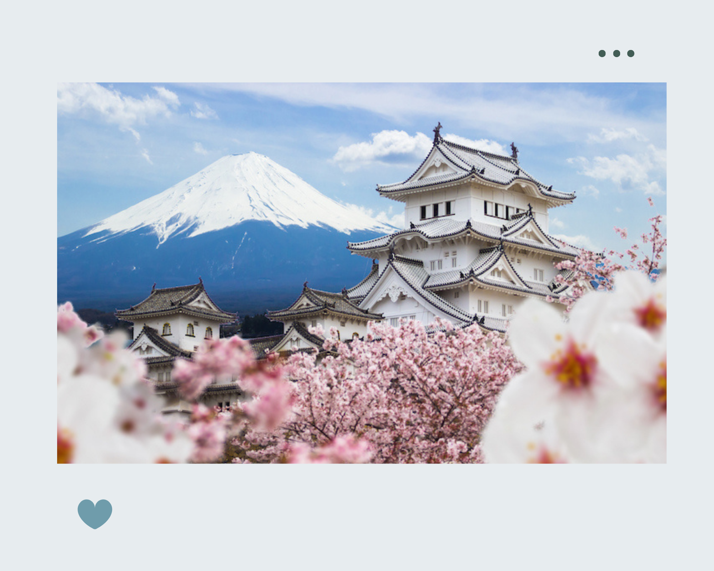
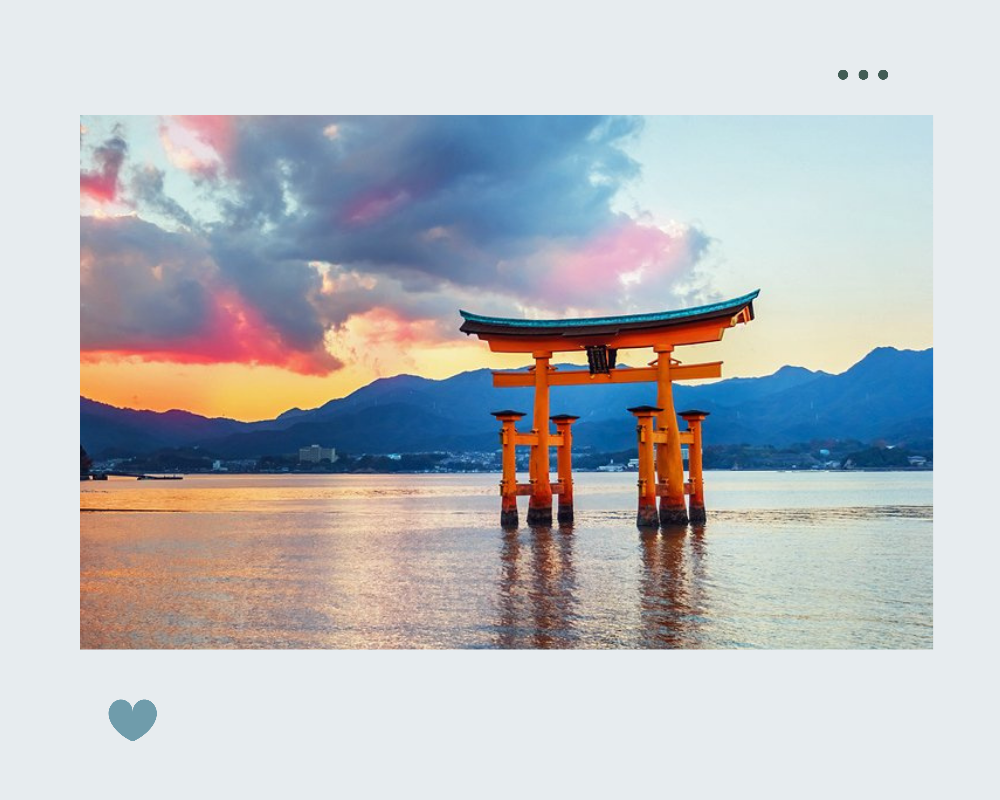

Himeji Castle is an ancient Japanese castle in Hyogo Prefecture, 650km west of Tokyo. Built atop a 45.6m high hill, its grand structure and 83 interconnected buildings create a complex maze-like fortress. Despite enduring many wars, Himeji Castle remains one of Japan’s most well-preserved historical landmarks.
Beauty of Japan


Located on Miyajima Island in Hiroshima Prefecture, Itsukushima Shrine is one of the most important and famous Shinto shrines in Japan. This place was built into a complex consisting of a main temple, many small temples arranged around it, many bridges and corridors connecting the areas above the sea in front of Mount Misen of Miyajima Island.

Nachi Waterfall is a 133 meter tall waterfall boasts the longest drop in Japan, with one ton of water dropping down the cliff every second. It enshrines the deity of Hiro Shrine, the auxiliary shrine of Kumano Nachi Taisha Grand Shrine. This awe-inspiring and dynamic view is truly unforgettable.

Arashiyama Bamboo Forest is easily one of the top must-visit places in Kyoto, if not all of Japan! Towering slender bamboo stalks reaching into the sky. Eerie, clacking music as the stalks sway in the wind. Ancient shrines scattered along the trail and nearby. Stunning Japanese gardens with ponds and views. Arashiyama Bamboo Forest, sometimes called Arashiyama Bamboo Grove or Sagano Bamboo Grove, is located on the western edge of Kyoto along the beautiful Katsura River in the foothills of Mount Arashiyama (also called Mount Ogura).